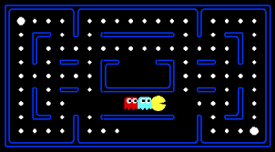
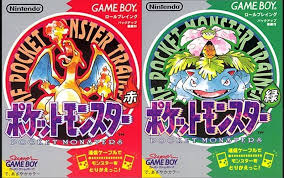

Pacman
Jolas hau 1980. urtean atera zen merkatura, eta hainbat Record Guiness irabazi ditu. Jokalariak egin behar duena Pac-man-ekin pantailako puntu guztiak jatea da. Hala ere, 4 mamu agertzen dira eta jokalaria jarraitzen dute. Mamuuak jokalaria ukitzen badute bizitza bat galtzen du, eta hiru aldiz ukitzen badute jokalaria galtzen du eta Game Over agertzen da.
Pokemon Red and Green
2004. urtean atera zen joku hau merkatura. Mundu honetan izaki batzuk bizitzen dira, Pokemonak deritzonak, eta gizakien lagunak eta adiskideak bihurtu dira. Gure protagonistak, Red, hainbat buruzagien pokemonen kontra borrokatu behar ditu, pokemon txapelduna bihurtzeko. Oso jolas dibertigarria eta erraza da txikientzako.